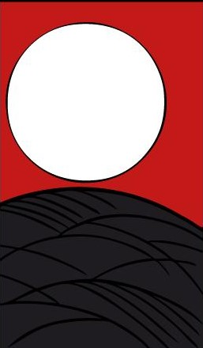

物理学のまとめ
物理学についての教科書や, 作成したPDF等を共有しようかなと考えています.
このページ全体については, 適宜更新をしようと思いますので, 完成するまでしばらくお待ちください.
詳細ページは以下の各分野のアイコンをクリックすると飛ぶことができます.
注意として, 「力学 と 解析力学」, 「熱力学 と 統計力学」, 「特殊相対性理論 と 一般相対性理論」
は同じページに飛ぶ仕様になっております.
天文関連のまとめ
今年度に起こる天体イベントをここにまとめます. 基本的には「天文年鑑」や「星ナビ」 に掲載されているイベントがほとんどだと思いますが, 突然の彗星来訪などのイベントは, 適宜更新していきますので, お楽しみに！
今年度の主な天体ショー ▼
注目！！！
C/2023 A3(ATLAS)彗星の来訪(クリックで記事へジャンプ)
4月 |
6日：満月 12日：彗星が東方最大離角 20日：新月, 金環皆既日食 |
|---|---|
5月 |
6日：満月, 反影月食 20日：新月 28日：くじら座の変光星ミラが最大光度 29日：水星が西方最大離角 |
6月 |
4日：満月, 金星が東方最大離角 11日：変光星はくちょう座χ星が最大光度 18日：新月 |
7月 |
3日：満月 7日：金星が最大光度(-4.7等) 10日：うお座155B星の接食 18日：新月 23日：冥王星が衝 26日：水星と金星が接近(5°18') |
8月 |
2日：満月 10日：水星が東方最大離角 12日：おうし座136番星の星食 13日：ペルセウス座流星群が最大 16日：新月 28日：土星が衝 31日：満月 |
9月 |
8日：ぎょしゃ座107B星の接食 15日：新月 19日：金星が最大光度(-4.8等) 20日：海王星が衝 21日：アンタレスの星食 22日：水星が西方最大離角 29日：満月 |
10月 |
2日：おひつじ座δ星の星食 15日：新月, 金環日蝕 22日：2P/エンケ周期彗星が近日点を通過 24日：金星が西方最大離角 25日：みずがめ座Ψ星の星食 29日：満月, 部分月食 |
11月 |
3日：木星が衝 13日：新月 14日：天王星が衝 18日：しし座流星群が極大 27日：満月 |
12月 |
4日：水星が東方最大離角 13日：新月 15日：ふたご座流星群が極大 24日：おひつじ座δ星の星食 27日：満月 |
1月 |
テキストが入ります |
2月 |
テキストが入ります |
3月 |
テキストが入ります |